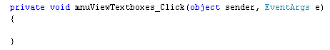
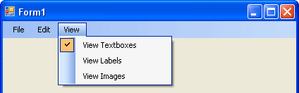

The View Menu
<< Continues from the previous lesson
We have three items on our View menu. But we'll only implement two of them. For the first one, View Text Boxes, we'll show you a handy programming technique with Boolean variables - how to toggle them on and off.
So return to your form, and double click the menu item for View Text Boxes. C# will generate the code stub for you:

What we'll do is to hide the text boxes when the menu item is clicked, and unhide the text boxes when you click again. A check icon will then appear or disappear next to the menu item. Here's an image of what we'll be doing:

To place a check mark next to a menu item, you use the Checked Property of the menu item. Add this to your View Textboxes code stub, in between the curly brackets:
mnuViewTextboxes.Checked = true;
So you just type a dot after the Name of your menu item. Then select the Checked property from the IntelliSense list. Checked is a Boolean value that you either set to true or false (it's either got a check mark next to it or it hasn't).
Run your programme and click your View Textboxes menu item. You should see a check appear. It does so because the default value for the Checked property is false. It only becomes true when you click the menu item, thereby running the code you added.
The question is, how do you get the Check mark symbol to disappear when it's clicked again? Obviously you need to set it to false, meaning not checked. But what's the code?
A handy programming technique is to toggle Boolean values off and on. You do it with the aid of the NOT operator ( ! ). Amend your code to this:
mnuViewTextboxes.Checked = !mnuViewTextboxes.Checked;
So instead of setting the Checked value to true, we have this:
!mnuViewTextboxes.Checked;
This says, "NOT Checked". But doesn't mean "Unchecked". What you are doing is setting the Boolean variable to what it is currently NOT. Remember: Checked can either be true OR false. So if Checked is currently true, set it to false, and vice versa. The result then gets stored back in the Property on the left of the equals sign.
Run your programme and try it out. Click the menu item to see the Check symbol. Click it again and it will disappear. This toggling of Boolean variables is quite common in programming, and can save you a lot of tricky coding!
To actually do something with the text boxes, though, you can add an if statement to examine whether the variable is true. What we'll do is make the text boxes visible if there's a Check, and not visible if there isn't a Check. Add this code just below the line you already have:
if (mnuViewTextboxes.Checked)
{
textBox1.Visible = true;
textBox2.Visible = true;
}
else
{
textBox1.Visible = false;
textBox2.Visible = false;
}
The Property we are changing is the Visible Property of text boxes. As its name suggests, this hides or un-hides an object. Again, it's a Boolean value, though. So we could have just done this:
textBox1.Visible = !textBox1.Visible;
The use of the NOT operator will then toggle the Visibility on or off. We added an if statement because it's handy to actually examine what is in the variable, rather than just assuming.
One line you may puzzle over is this:
if (mnuViewTextboxes.Checked)
The part in round brackets could have been written like this, instead:
if (mnuViewTextboxes.Checked == true)
For if statements, C# is trying to work out if the code in round brackets is true. So you can leave off the "== true" part, because it's not needed. If you want to check for false values, you can use the NOT operator again. Like this:
if (!mnuViewTextboxes.Checked)
This is the same as saying this:
if (mnuViewTextboxes.Checked == false)
Using the NOT operator is considered more professional. They mean the same, though, so use which one is better for you.
In the next part you'll see how to add images to your C# programmes.